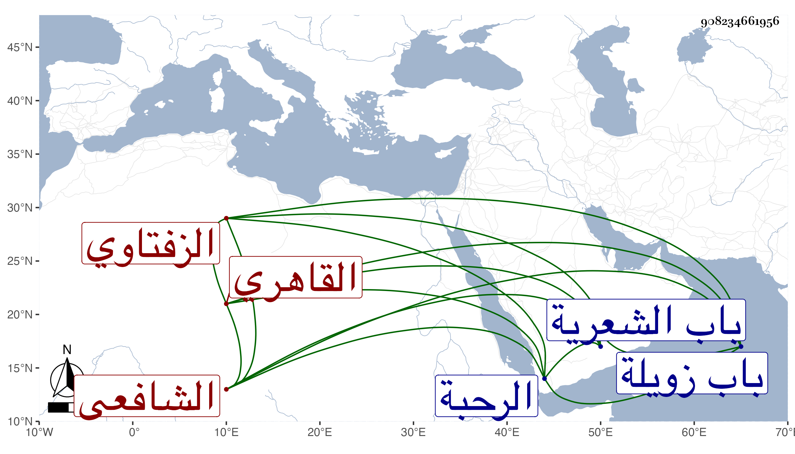

0902Sakhawi.DawLamic.ITO20230111-ara1.EIS1600.908234661956
Biography ID: 908234661956
726
محمد بن محمد بن محمد بن محمد بن عبد الله بن أحمد جلال الدين بن الولوي بن ناصر الدين الزفتاوي الأصل القاهري الشافعي الماضي أبوه وجده وجد أبيه ولقب شراميط . ولد سنة أربع وأربعين وثمانمائة ونشأ فتدرب بأبيه وجده قليلا في كتابة الأوراق ونحوها وناب في القضاء مع جهالته كأبيه ثم لزم خدمة العلاء بن الصابوني وأقبل عليه زكريا في أيام ولايته وجلس بحانوب باب الشعرية مضافاص لمجلسهم المعروف بهم عند حبس الرحبة مع مجلس آخر بظاهر باب زويلة وعدة بلاد كالمنية وشبا وجزيرة الفيل وبهتيت وعملها ، وكان قد سمع بقراءة ابن عمه وقرينه في السن البدر بن الأخميمي على العلم البلقيني وابن الديري والعز الحنبلي والشريف النسابة والمحب بن الأشقر ختم البخاري في سنة ستين بل أجاز لهما في استدعاء مؤرخ بربيع الأول سنة ست وأربعين جماعة ذكرتهم في عمه الصدر أحمد منهم شيخنا وابن الفرات وتجار البالسية والمحب محمد بن يحيى .
